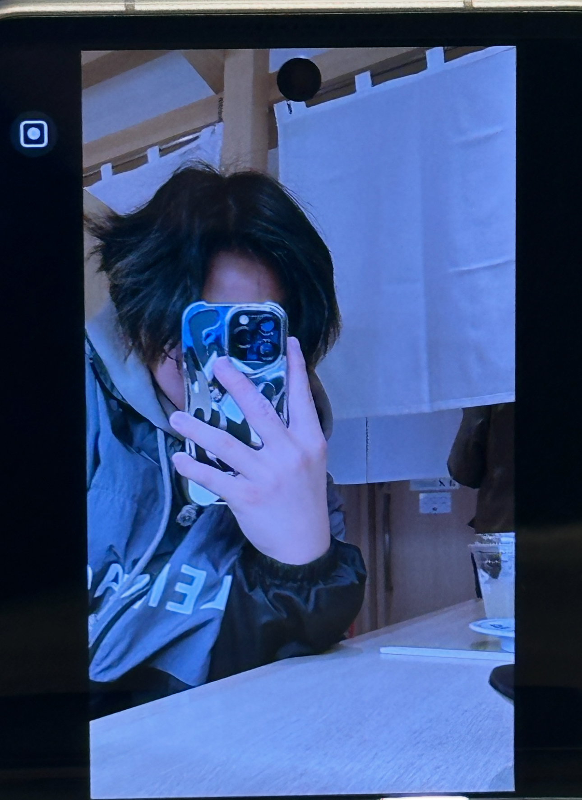

About Us
Hey! I'm Ray, the person behind Crossed Studios. I'm a design student who loves experimenting with different creative stuff—like posters, videos, branding, and even making clothes.
This space is where I share my work, learn as I go, and try out new ideas. Whether it’s designing a logo or printing t-shirts, I enjoy putting my style into everything I make.
What I Do
- Graphic Design (Posters, Branding, Menus)
- Photography & Videography
- Clothing & Accessory Design
- UI/UX & Website Design
Tools I Use
Photoshop, Illustrator, InDesign, DaVinci Resolve, Premiere Pro, Blender, Visual Studio Code
Why 'Crossed Studios'?
The name comes from the idea of crossing over styles, disciplines, and influences—from streetwear to digital design. It’s all about blending creative worlds together.